M 1 (Dijkstra’s Algorithm)
Lecture - 29
Shortest Paths - Module 1 (Dijkstra’s Algorithm)
(Refer Slide Time: 0:11)

Hello, and welcome to the sixth week of Getting Started with Competitive Programming. So this week, our focus is going to be on the ‘shortest paths’ problem, which is both a very fundamental problem in graph algorithms as well as a really popular theme in contest programming. Typically, you are trying to figure out what is the fastest way of going from one vertex to another in a given graph.
And in this module, which is broken up into four segments for your convenience, we are going to be leading up finally to this problem called ‘sending email,’ and we are going to see Djikstra’s algorithm along the way. But before we get started, let me give you a high-level overview of the different scenarios that we will be addressing this week.
(Refer Slide Time: 01:02)

So, generally speaking, we will be working with graphs that are weighted and directed. To say that a graph is weighted, in this context, simply means that there is a weight function that maps every edge in the graph to some number. So actually your weights could be any collection of objects that you have the ability to add and compare. But specifically, we will typically be working with integers and sometimes rational weights.
And to say that the graph is directed, we already know what this means from our discussions last week. But just to repeat, a graph is directed if we think of every edge as being oriented, or we think of the edges as being ordered pairs. So (we distinguish) for a pair of vertices x and y, we distinguish the pair x y from the pair y x.
So that is going to be the setting that we are working in. Now we are going to start this off by looking at the special case when all the edge weights are one. This is just another way of saying that you are working with an unweighted graph. Now in this situation, the nice thing is that the cost of a path is simply the number of edges on it.
Notice that when you have weights, this need not be true because depending on how the weights are, it could be that you have a path with a small number of edges that is super expensive, and you have paths with a large number of edges which are cheap. Again, just because of the way the weights are. When all the weights are uniform, this is not something that you have to worry about.
So the lengths of the paths are actually a true reflection of the cost of the path as well. Now, this setting is simple enough that we have actually already seen an algorithm to resolve the problem in this case. And our first exercise will be, essentially, to recap a breadth-first search and consider how it helps us solve the shortest path problem in this special case.
After this, we will allow for weights to enter the picture and we will see that BFS no longer quite works in its default form, and we will have to explore a different way of approaching the problem. But we will still restrict ourselves first to the setting when all edge weights are positive because that is a little bit easier to think about compared to the more general case when we allow for negative edge weights.
The thing about negative edge weight is that it can, again, mess up your intuition for what you expect to happen when you are dealing with the shortest paths. So we are going to explore this distinction as we go along. So to begin with, we will not allow for negative edge weights and then we will allow for them. But then we do allow for them again we are going to do it in two phases.
First, we will allow for the presence of negative edge weights but we will disallow the presence of a negative weight cycle. Now a negative weight cycle in a graph is simply a cycle which is such that if you were to go around the cycle and add up all the weights of the edges that you encounter, then the cumulative rate is going to be negative. Now you will have to take my word for this at the moment that this distinction is actually important.
The presence of negative weight cycles can cause some substantial disruption in the notion of shortest paths. So we will need to handle them carefully and separately. So in the setting when we also allow for negative cycles, we are going to see an approach that is different from the one that we take when we know or we assume that there are no such cycles.
So this is going to be the essence of the three different approaches that we take to the shortest paths problem. First, we are going to see an approach when the graph is essentially unweighted, then we are going to look at an approach that works for positive edge weights, and we are going to modify that slightly to allow for negative arcs, but still, we assume that there are no negative cycles.
So I am thinking of this as the second broad approach, and the third approach is going to be when we also allow for negative weight cycles and we will talk about that more when we get to it. Finally, we will also deal with separately the problem of all pairs’ shortest paths.
Now, it turns out that if you know how to do shortest paths, then you can more or less trivially also find shortest paths between all pairs, by simply running this algorithm as a sub-routine between all pairs. But it turns out that there is a slightly faster approach to this problem which is very elegant and, you know, we are going to explore that and implement it as well.
So, as is usually the case, we are going to describe these algorithms and describe their implementations, but we will not really have the time to get into proofs of correctness, which are also important to just have a feel for and to appreciate and understand. So if you are curious about which algorithms we are going to be learning so that you can go look them up in more detail after we are done, then I am just going to throw in the names here.
So, first, the case of unweighted graphs, as I mentioned, is really the breadth-first search traversal that we discussed last time. And the case when all edge weights are positive can be handled by Djikstra’s algorithm and a slight modification to Djikstra’s algorithm makes it work even when we have negative edge weights but we do not have negative weight cycles.
Once we do allow for the possibility of negative cycles, there is the Bellman-Ford algorithm which allows us to either determine the shortest paths correctly or detect the presence of such a cycle. And once again, when we get to this discussion in more detail, you will see why this sort of output actually makes sense. And for All-Pairs Shortest Path, the improvement that we are going to look at typically goes by Floyd Warshall.
Now, I should mention that shortest paths being a really fundamental graph algorithms problem has been extensively studied, and some of these algorithms were proposed by several other researchers who are not mentioned on this slide. So if you are interested in the rich history of shortest path algorithms and how some of these really popular ones came about, I would highly recommend the chapter on shortest paths in the ‘algorithms text’ by Jeff Erickson.
This book is conveniently available from the textbook’s website and I am going to add a link that you can follow in the description of this video. So please do check it out. It has many more details about how these algorithms came about, and there is a nice historical perspective that you will gain if you were to go through this.
In the meantime, let us now get started with the special case when all edge weights are one. That will be the focus of this segment. And in the next two segments, we will consider Djikstra’s and modified Djikstra’s approaches, and we will round this off by looking at an implementation in the context of the sending email problems. So that is going to be the plan for this module.
In the next module, we will look at Bellman-Ford. Again, we will split it into two segments. In the first, we will study the algorithm itself and in the second we will implement it in the context of a problem. And then in the third and the final module, we are going to do the same for All-Pairs Shortest Paths as well.
(Refer Slide Time: 09:04)
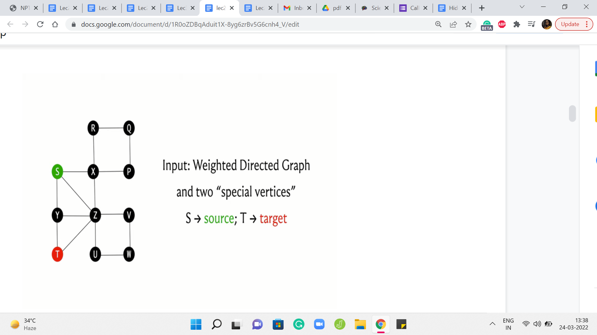 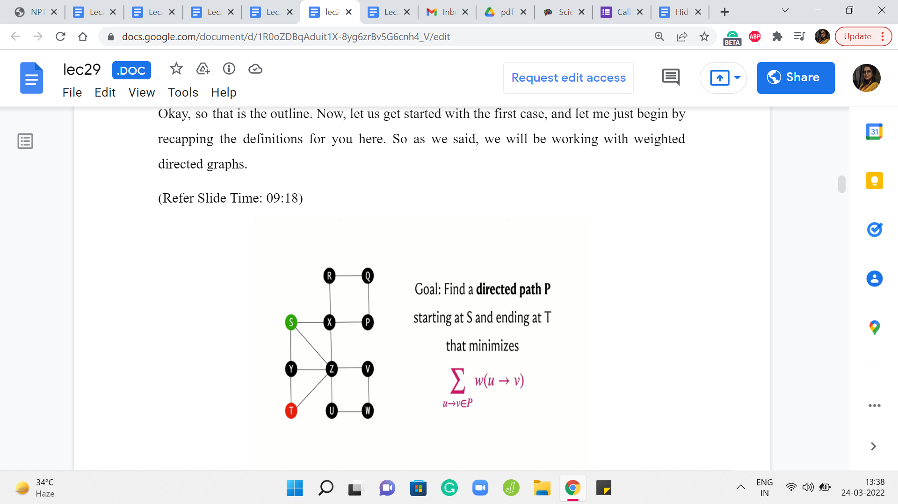
Okay, so that is the outline. Now, let us get started with the first case, and let me just begin by recapping the definitions for you here. So as we said, we will be working with weighted, directed graphs.
Typically you might imagine that you have been given two vertices, which we will usually refer to as the source and the target, and you are trying to figure out what is the path that connects the source to the target that has the cheapest cost.
The cost of a path is simply the sum of all the weights of the edges that participate in the path. So this quantity that we have just described here is often referred to as the distance. So we will talk about the distance of the vertex T from the source S as being the length of the shortest path that connects S to T.
(Refer Slide Time: 09:51)
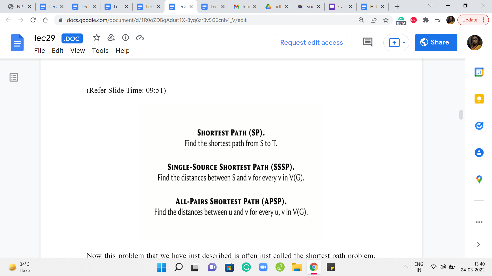
Now this problem that we have just described is often just called the shortest path problem, so you are given two vertices S and T, and you want to find the length of the shortest path from S to T. A very popular variant is the single-source shortest path problem, SSSP, where you are given a source vertex and you want to know the distance of every other vertex from this source. And this is something that you can of course solve by just solving the shortest path individually on every vertex.
That is a valid algorithm. But sometimes it is just useful to think of this more holistically and you could come up with better ideas, which solve SSSP in one shot, so to speak. And the SSSP problem will pretty much be our focus for all of this module, and even the next one. But after that, we will turn our attention to this All-Pairs Shortest Path problem which is again a very popular variant. So here we want to know the distances between every pair of vertices in the graph.
And once again, of course, if you know how to do SSSP, you can do APSP by simply running SSSP as a subroutine. Right. So you run an outer loop, which runs through every vertex, and for every vertex, you just run your SSSP algorithm, and you will then end up having discovered the distances between every pair of vertices.
Now, that is going to have a certain complexity, which is basically the complexity of the SSSP algorithm with a multiplicative overhead of n, n being the number of vertices. And an interesting question is, can you do better? Can you somehow solve APSP directly? And it turns out that we will have some ideas to address that question as well.
So these are the three problems that we will be considering. And before we actually get to try to understand what happens when all edge weights are one, let me also get a little more terminology out of the way.
(Refer Slide Time: 11:50 & 13:03)
 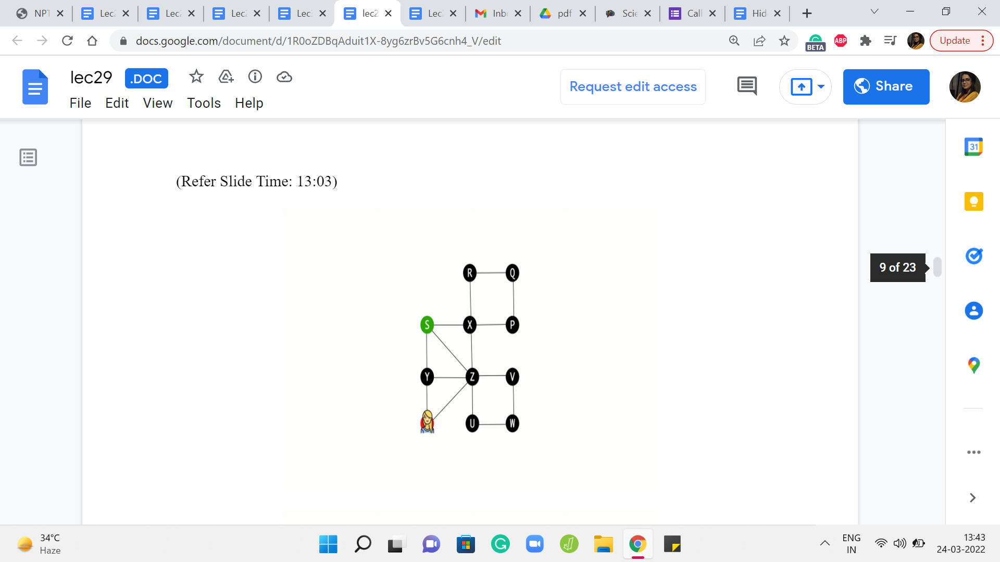
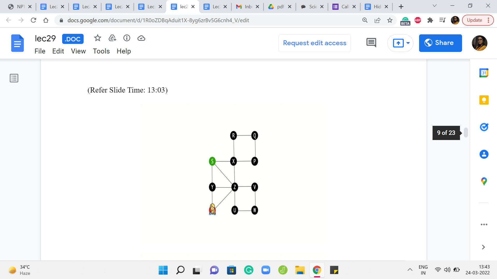
So, you might remember from the previous week, that we defined a path as a sequence of vertices where every consecutive pair is connected by an edge. And in the context of directed graphs, you want the edge to be from say U I to U I +1 if you are looking at the ’i’th and the ’i+1’th vertices of the sequence. So they have to be oriented exactly in the way that you expect them to be. So that is a path.
And notice that when we define a path, we do not really have any constraints on whether vertices can repeat or not. So by default in a path, you could have a repeating vertex. And if you insist that you do not want vertices to repeat, you want all the vertices on the path to be distinct, then you emphasize that by calling it a simple path.
So whenever we refer to paths, we will, generally speaking, allow for repetition of vertices. If we want to emphasize that vertices are not being repeated then we will use the phrase simple path instead. Now as long as you are working with non-negative edge weights and you want to observe shortest paths, this distinction is not very important because all of your shortest paths will automatically be certain paths only. To see this, let us look at an example of a path, which is not a simple path.
So here, for instance, starting from S, suppose we go to T in this way. So notice that the vertex x is getting repeated, and then we finally land up at T. And imagine that all the edge weights are one here. It should be reasonably obvious that this is not an optimal path from S to T because this whole detour that we did on the cycle X R Q P could have simply been avoided.
So whenever you have a path with these repeated vertices, if you just eliminate the detours then you will see that you always end up with a path that is better than the one that you started off with. So as long as your edge weights are non-negative, your shortest paths will automatically turn out to be simple paths. From this example, you can probably already start getting some sense of why negative cycles can be problematic for the definition of shortest paths.
This is something that we will explore more fully later but I just wanted to drop a hint in case you were curious about that. But just went back to our definition here, this is just a reminder that whenever we talk about paths, in general, we will allow for repeating vertices. And whenever you are working with non-negative edge weights, your shortest paths will automatically turn out to be simple paths, anyways.
(Refer Slide Time: 14:23 & 14:54)


Now, in terms of terminology, I should also point out that in some references, in some textbooks, especially graph theory textbooks, what we are calling a path is usually called a walk or a trail. Okay, and what we are calling a simple path is actually just called a path. So this can sometimes be confusing depending on where you are reading from.
So it is just useful, I think, to fix one terminology and stick to it in a particular discussion and since this is the tradition and most algorithms books that you will read, I will just stick to this terminology where a path is a sequence of vertices where the constitutive vertices have an edge between them and the vertices need not be distinct. And if I want to emphasize that the vertices are distinct, I will refer to it as a simple path.
(Refer Slide Time: 15:18 & 15:42)


So, with that out of the way, let us finally talk about what can we do when all the edge weights are one. So for this special situation, as we have hinted to earlier, we already know an algorithm that determines the distances from any source vertex for us. And this is in fact the breadth-first search or the BFS traversal that we have seen in the previous week.
So, in fact, let us pull up the implementation to remind ourselves of what we were doing. So we had this distance array, which was initialized so that every vertex was initially at a distance of infinity from the source, meaning that these were all unexplored vertices and we do not know anything about how close or how far away they are from the source in the beginning. And the only thing that we know is that the source is immediately reachable from itself. So the distance from the source to itself is initialized to zero.
And after this, we had an implementation where we essentially explored all the neighbors of the source first and then the neighbors of the neighbors, and so on and so forth. At every stage, we were careful to not revisit and already visited. And if you draw out a typical BFS traversal you will see that there is a natural layer-like progression. The BFS tree can be organized fairly naturally into layers and it turns out that all the vertices that are in the ‘k’th layer are in fact at a distance ’k’ from the source and this is something that you can prove.
Now, although we will not be doing a formal proof of why BFS works as claimed, I would like to go through an example just to build some intuition for why you might expect to believe that this works out the way that it does. For this, it is crucial to understand how vertices enter the ’k’th layer in the BFS traversal.
Now, our code here already has a trigger, which helps you understand when a new layer has started. This is the first time that the distance of the vertex that you are currently exploring mismatches with the layer number that you are currently storing. So when that happens you can print a statement saying that a new layer has just begun and, of course, after that, you update the layer variable, and so on.
(Refer Slide Time: 17:42 & 18:38)
 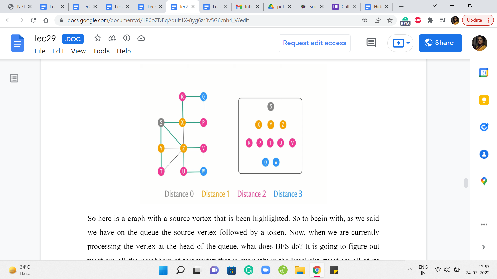
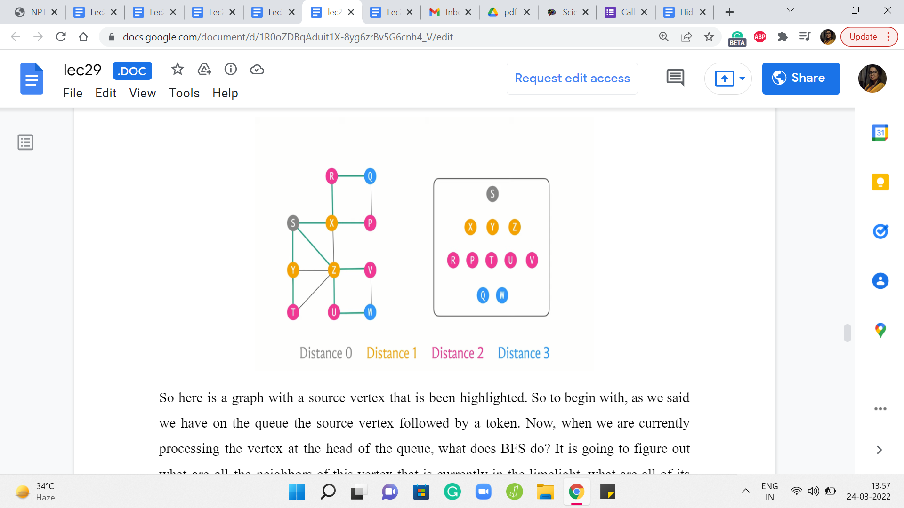
But to help our visualization along, I am just going to introduce a conceptual intervention here, which is the idea of using a token to keep track of what is going on with the layers. So this token is a completely artificial concept. It is just in our imagination. You do not have to change or update your code or anything like this. Just follow along with the example that I am going to show you.
So the way the tokens are going to work is that, to begin with, we are going to enqueue the source and a token right behind it. And in general at any step, if we pull a token from the head of the queue, then we will just take the token and push it back to the end.
Now, the idea is that whatever vertices are sandwiched between these two token operations, so to speak, are the vertices that get into a common layer of the BFS traversal. I think this will become clearer as we go through an example. So let us do that.
So here is a graph with a source vertex that is been highlighted. So to begin with, as we said we have on the queue the source vertex followed by a token. Now, when we are currently processing the vertex at the head of the queue, what does BFS do? It is going to figure out what are all the neighbors of this vertex that is currently in the limelight, what are all of its neighbors that have not been visited yet.
And we are going to collect all of those vertices and push them to the back of the queue. Now since this is the very beginning, no vertex has been visited so far. So we will just pick up all of the neighbors of S. In this case, there are three neighbors X, Y, and Z, and we are going to push all of these to the back of the queue, and we are going to mark them as visited.
Now, as you can see, S left the queue and we pushed the token to the back because the token was the next thing on the queue. And now the next vertex to get processed – the vertex in the head of the queue is the vertex X, and X has two unvisited neighbors. I mean it has altogether four neighbors, but only two of those are unvisited so far. So we are going to queue these up, R and P at the end of the queue, and we are going to mark them as visited.
Let us bring the queue a little bit to the left so we have a little more space. And at this point, we have finished processing the vertex X. So we will let X exit the queue. And now I am going to color code X with a different color because this is, notice, a shift in the layer numbers. So we have the first layer is, by default, just the source vertex.
And now, until the next time that we see a token, all the other vertices are going to be on the first layer. So I am going to mark all of these vertices ‘yellow,’ just to remember that these have been processed, and they were members of the first layer. So the second vertex in the first layer is vertex Y. So this is our current active vertex. It has only one unvisited neighbor. So we are going to identify this neighbor T and push it to the back of the queue.
Now, we will let go of Y and again mark it as a vertex that was processed as a part of the first layer. Now the last vertex in the first layer is the vertex Z, and Z has two unvisited neighbors. So let us identify U and V. So we go ahead and add U and V to the back of the queue. At this point, we are ready to let go of Z and we also remember to mark Z as the last vertex to be processed in the first layer.
Now we see the token, which is a signal that we have finished processing all the vertices in the first layer. So we push the token to the back and we are now mindful of the fact that we have started off a new layer which in this case is going to be the second layer. So let us see what happens in the second layer. The first vertex at the head of the queue is the vertex R and R only has one unvisited neighbor, which is Q.
So we identify Q and add it to the back of the queue, and then we let go of R. When we look at P and T, which are the next vertices in the queue, they have no unvisited neighbors. So we simply mark them as being processed. And notice that now the color-coding has changed to denote the fact that we are processing vertices in, now, the second layer. So the next vertex is U and U does have an unvisited neighbor which is W.
So we add W to the back of the queue, let go of the vertex U, mark it as processed. And finally, we see V, which has no unvisited neighbors. So we simply let it go. And again mark it, as being processed. And the next thing on the queue is the token, which tells us that we have finished processing all the vertices on the second layer, and this marks the start of a new layer, which in our case is going to be the third layer.
So as before, we push the token to the back, and we process the two vertices that we have on the third layer. None of these vertices have any unvisited neighbors. So we are simply going to run through them and let them go and just mark them as being vertices in the third, and in our case, also the last layer because now the only thing left in the queue is the token, which is a sign that BFS has run its course and the algorithm is now complete.
So if you were to look at the sequence in which the vertices got processed, organized by layer, you will see that this is how everything panned out. So we started with the source which was on layer zero, and then on the first layer we saw its immediate neighbors X, Y, and Z. And X, Y, and Z were responsible for pulling in collectively the vertices R, P, T, U, V on the queue that constituted the second layer. And these guys brought in Q and W.
Hopefully, it is intuitive that when you are on layer number k, you are at a distance of k from the source. It is clear that you are definitely reachable within k steps. That is for sure because you can just follow your parent pointers and trace your way back to the source. The only question and the thing that actually requires proof is to say that you cannot do it any faster. You cannot do it with fewer steps.
(Refer Slide Time: 24:23 & 25:07)
 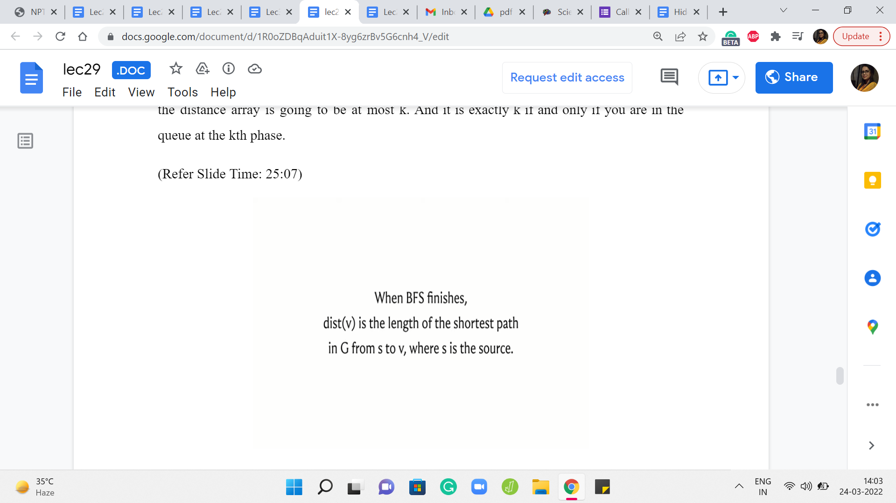
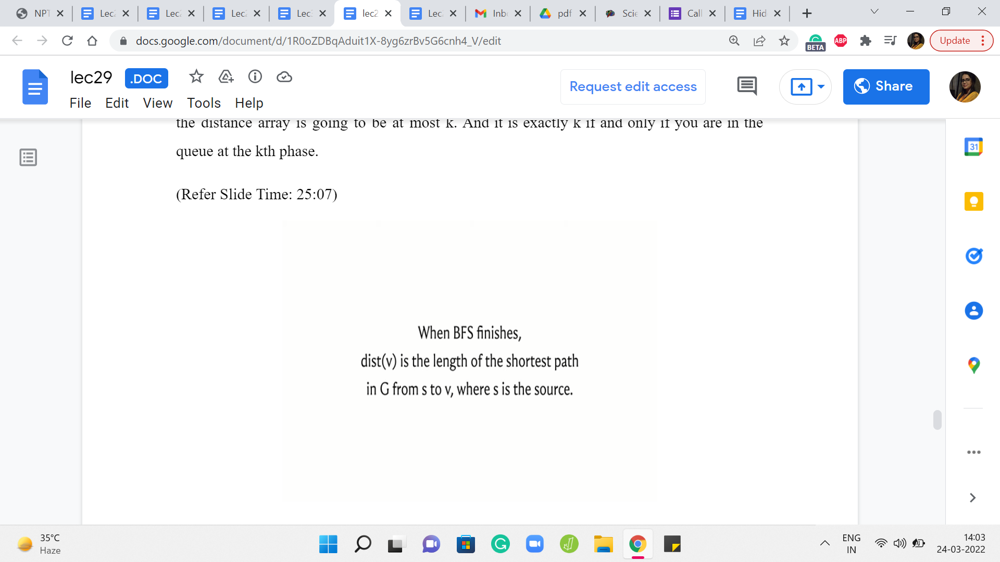
And the intuition for that is that if you could do it with fewer steps, then you would have been recognized, and you could have been pulled in earlier in a previous layer. This is something that you can formalize using induction. And here are a couple of statements that you may want to think about proving if you have not seen formal proof of this in a previous class. It is worth sitting down and trying to work through this.
So essentially, we are saying that when you are at the end of the ’k’th phase when you look at a vertex, its distance is either infinity, so this is distance as recorded in the distance array. So either it is so far an unseen vertex, or if it is a seen vertex then the value that is recorded in the distance array is going to be at most k. And it is exactly k if and only if you are in the queue at the ’k’th phase.
Also, the correctness of BFS in the context of capturing distances is given by this claim here, which says that once BFS is done, the values in the distance array are a true reflection of the actual distances in the graph. This is something that you can prove using induction. As usual, I will not be going into proof here. But if you are interested, you could either try figuring this out on your own, or you can look up the pointers in the description of this video where you can read up on proof of this fact.
(Refer Slide Time: 25:52 & 26:17)
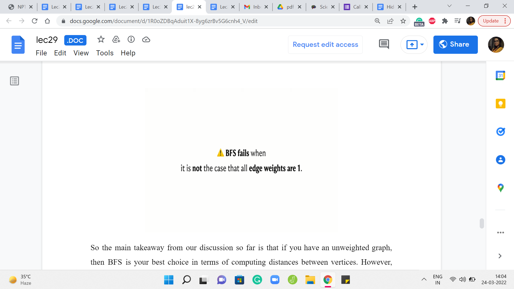 
So the main takeaway from our discussion so far is that if you have an unweighted graph, then BFS is your best choice in terms of computing distances between vertices. However, once edge weights come into play, then BFS might not work out. So in particular, you could try to pause the video here and come up with an example of a graph where BFS does not do the right thing in terms of capturing distances when edges have weights on them. So feel free to pause the video here and come back once you have had a chance to think about this.
Alright so here is an example. It is a graph with just three vertices, and the edge weights are as shown. And you can see that if you are trying to figure out the distances from the source to all the remaining vertices, then the best way to get from S to B is not via the direct edge, but to actually take a detour and go via A because that is how the edge weights have been set up.
On the other hand, because the way BFS works is the algorithm is not really trained anywhere to account for the weights at all. It is just going to blindly pick up both the neighbors of S in the first layer of the exploration. So both A and B will have the same status as vertices on the first layer. And if you were to do backtracking to find the shortest path, then BFS would tell you that the best way to reach B is via the direct edge from S, which in this case is not quite right.
(Refer Slide Time: 27:27 & 27:39)
 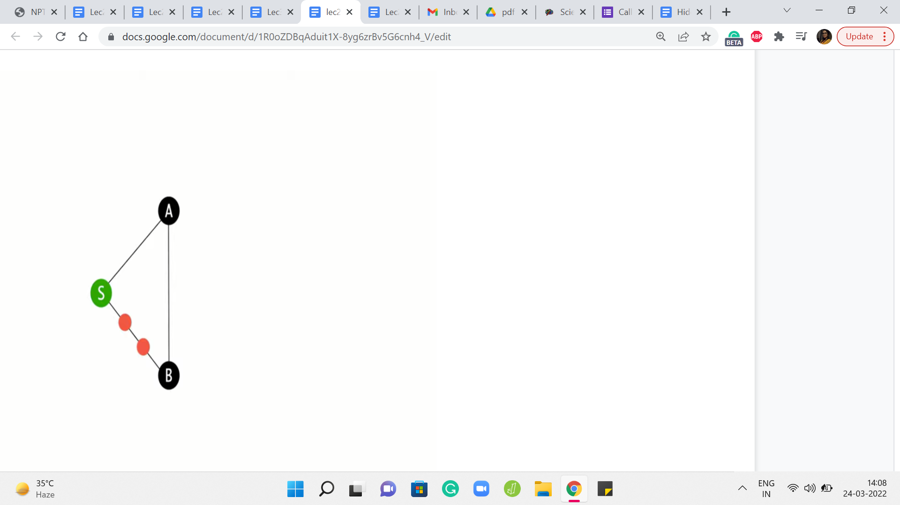
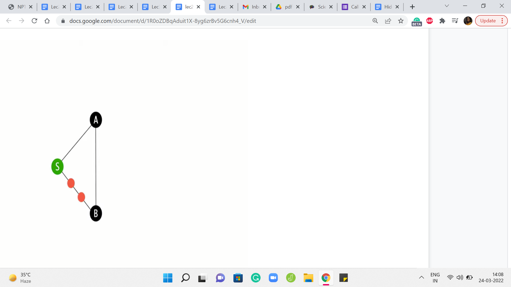
And it is not surprising once again because BFS is really not trained to look at weights at all. So you could try to fix this in some sense, by making BFS see the weights by potentially messing around with the graph a little bit. So one thing that you could do, which is actually a pretty common trick is to puncture the edges that have weights on them as many times as the weight, roughly.
So actually, ‘weight - 1’ many times, so that the edge, which previously was just a direct edge is now automatically elongated to reflect the actual weight of the edge. Now, of course, this will work as long as your weights are positive integer weights so that you can do this puncturing an appropriate number of times. And you can convince yourself that if you run BFS on this modified graph, things will actually work out and you will get the correct distance values.
(Refer Slide Time: 28:47 & 29:02)

So this feels like a tempting way to prolong the usefulness of BFS. So at least when you have positive integer weights, maybe you can actually do this. Would I recommend it? Well, unfortunately, no, not really. The reason for that is that this operation of subdividing the edges and inserting these artificial dummy vertices can be extremely expensive. And, in particular, the graph that you generate by doing this trick – the number of vertices in this graph, as you can imagine, is going to be proportional to the weights of the vertices.
So if you have the weights of the edges, sorry, so if you have edges whose weights are rather large, you are going to be creating a humungous graph that you do not really want to deal with. Instead, what you might want to think about is – Come up with a way to predict the behavior of BFS. Really the key thing that you want to think about is, what is the next real vertex, not the dummy vertices, what is the next real vertex that BFS is going to add to the queue in this modified graph.
And if you can distill the essence of BFS’ behavior on this graph, if you can predict properly which is the next vertex that gets added to the queue, then hopefully you can bypass the creation of this intermediate graph and you can directly write an algorithm that will do the right thing for graphs that have non-negative edge weights.
So that is more or less what we are going to do, and that is going to lead us to a discussion of Djikstra’s algorithm which is what is coming up in the next segment of this video. So before you watch that, maybe just think about what would be your strategy to deal with edge weights, especially when you do not have to worry about negative edge weights. I will see you back in the next segment!